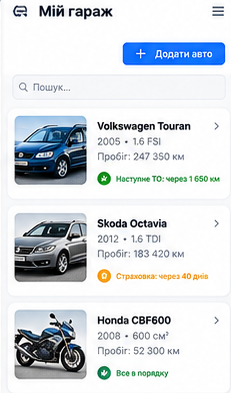
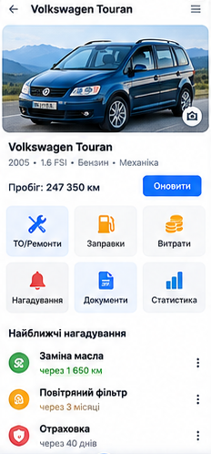
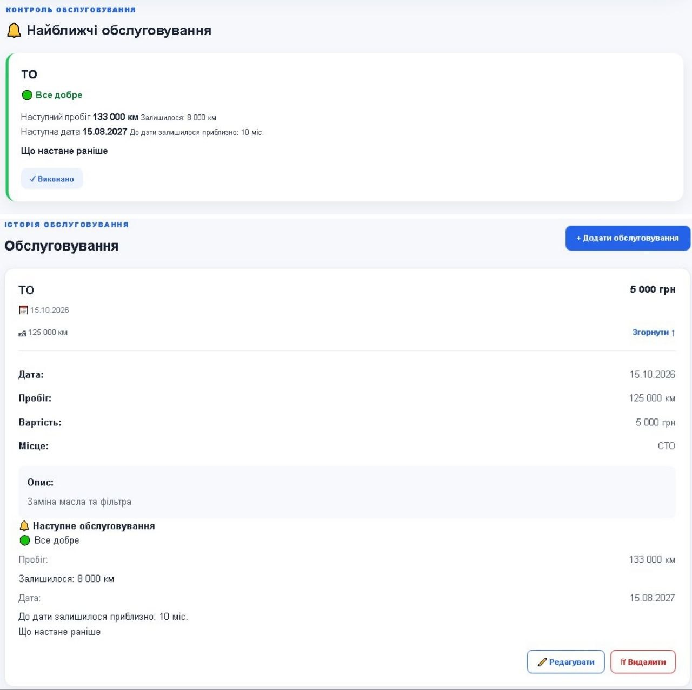
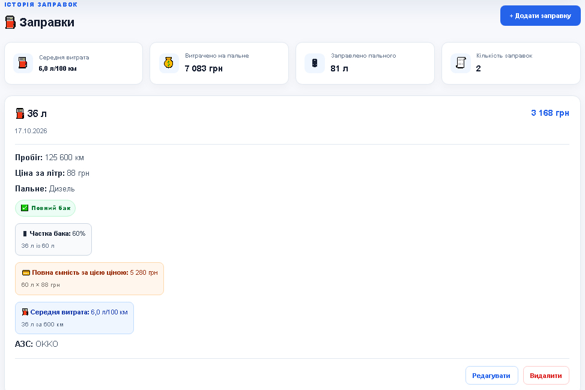
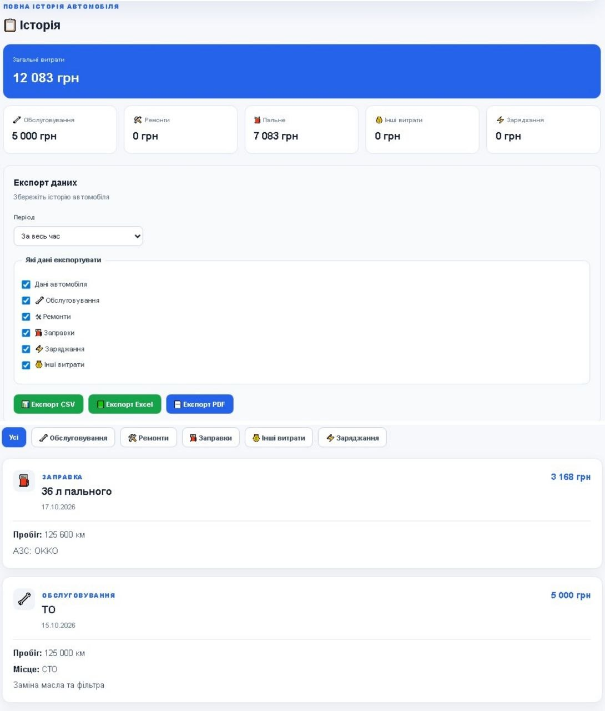
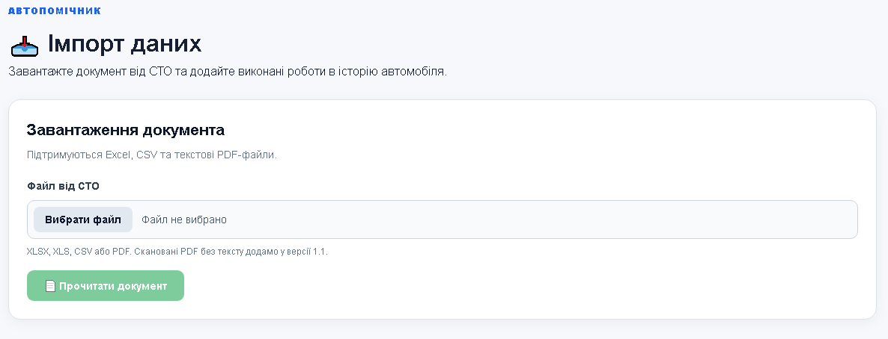

🚗 Особистий гараж
Додавайте свої автомобілі, фото, пробіг та основну інформацію.
🚘 Ваш автомобіль завжди під контролем
Зберігайте інформацію про технічне обслуговування, ремонти, заправки та витрати. Створюйте нагадування і більше не забувайте про важливе.
Особистий гараж
2018 • 1.6 TDI
МОЖЛИВОСТІ
Додавайте один або декілька автомобілів, зберігайте їхні основні дані, пробіг і фото.
Зберігайте всю історію технічного обслуговування, ремонтів, запчастин і робіт.
Записуйте заправки бензином, дизелем, газом або заряджання електромобіля.
Зберігайте витрати на автомобіль і бачте, скільки коштує його утримання.
Плануйте наступне обслуговування за датою або пробігом автомобіля.
Переносьте старі записи про автомобіль з Excel, CSV або текстових PDF-файлів.
Вивантажуйте історію автомобіля у PDF, Excel або CSV за вибраний період.
Встановіть АвтоПомічник на телефон або комп'ютер і запускайте його як застосунок.
АВТОПОМІЧНИК ЗСЕРЕДИНИ

Додавайте свої автомобілі, фото, пробіг та основну інформацію.

Відкривайте потрібний автомобіль і переходьте до всіх його розділів.

Зберігайте виконані роботи, дати, пробіг, вартість і місце ремонту.

Ведіть історію заправок, заряджань і контролюйте витрати.

Переглядайте записи за період та експортуйте їх у PDF, Excel або CSV.

Переносьте свої попередні записи з Excel, CSV або текстових PDF-файлів.
ЯК ЦЕ ПРАЦЮЄ
Зареєструйтеся за допомогою електронної пошти або Google.
Вкажіть назву, модель, рік та поточний пробіг.
Додавайте ремонти, ТО, заправки та інші витрати.
АвтоПомічник допоможе не забути про наступне обслуговування.
АВТОПОМІЧНИК
Користуйтеся АвтоПомічником на комп'ютері, планшеті або смартфоні. Ваші записи синхронізуються між пристроями.
Встановіть АвтоПомічник як застосунок на смартфон або комп'ютер і відкривайте його прямо з головного екрана.